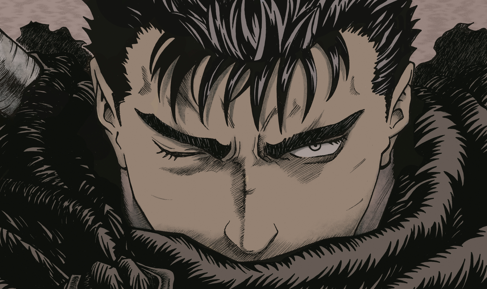

Guts, o Espadachim Negro

Guts é alto, com cabelo preto curto e musculoso.
Seu corpo é coberto de cicatrizes, sem o olho esquerdo e uma prótese no lugar do antebraço direito,
Seu corpo é coberto de cicatrizes, sem o olho esquerdo e uma prótese no lugar do antebraço direito,
Aqui está uma pequena amostra da linhagem de Guts:
Arco da Era Dourada:- Guts, junto com outros mercenários invadem uma fortaleza protegida pelo Bando do Falcão, com facilidade, eles obtêm sucesso na investida.
- Em uma de suas viagens, Guts é perseguido pelo Bando do Falcão e eventualmente é recrutado.
- Depois de três anos, Guts é promovido a capitão do Bando do Falcão, assim ele comanda um grupo dentro do próprio bando.
-
O Bando do Falcão prepara uma investida contra Cavaleiros da Baleia
Azul, de Tudor. Guts tenta defender uma capitã do Bando, mas cai
junto a ela de um penhasco.
Guts acha uma caverna e se esconde junto a moça, ele espera a chuva passar e ela se recuperar para voltar ao bando.
Eles começam sua caminhada de volta mas são encontrados pelos Cavaleiros, Guts então começa uma batalha extensa e cansativa contra 100 homens.